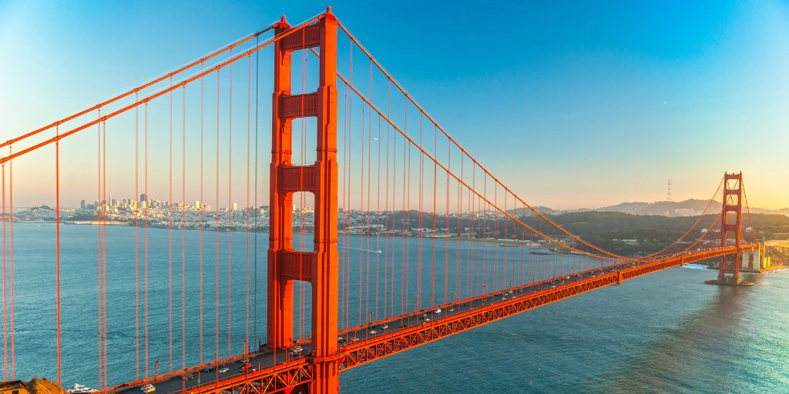

Nueva York

Nueva York, conocida como "La Gran Manzana", es una de las ciudades más emblemáticas del mundo. Es famosa por sus rascacielos como el Empire State Building, la Estatua de la Libertad y Central Park. Además, es un centro cultural con numerosos museos, teatros y una vibrante escena artística.
La diversidad cultural de Nueva York se refleja en su gastronomía, desde restaurantes de alta cocina hasta puestos de comida callejera. Es también un importante centro financiero, hogar de Wall Street y la Bolsa de Valores de Nueva York.
Los Ángeles

Los Ángeles, la ciudad de las estrellas, es el corazón de la industria del entretenimiento en Estados Unidos. Hogar de Hollywood, es conocida por sus estudios de cine, desfiles de moda y eventos culturales. Las playas de Santa Mónica y Venice son destinos populares para turistas y locales por igual.
Además de su industria cinematográfica, Los Ángeles ofrece una amplia variedad de actividades al aire libre, parques, museos y una gastronomía diversa que refleja su rica herencia multicultural.
Chicago

Chicago, conocida como "La Ciudad de los Vientos", es famosa por su arquitectura impresionante y su vibrante escena musical, especialmente el jazz y el blues. El Millennium Park, con la icónica escultura "The Bean", es un punto de encuentro popular para residentes y visitantes.
La ciudad también es reconocida por sus deliciosas pizzas estilo deep-dish, sus equipos deportivos de primera categoría y su rico patrimonio histórico. El río Chicago ofrece recorridos en barco que destacan la arquitectura única de la ciudad.
Houston

Houston es una de las ciudades más grandes de Estados Unidos y es conocida por su industria energética, especialmente el petróleo y el gas natural. Además, es un centro importante para la exploración espacial, albergando el Centro Espacial Johnson de la NASA.
Houston ofrece una mezcla diversa de culturas, lo que se refleja en su amplia oferta gastronómica y eventos culturales. Sus parques, museos y el Distrito de los Museos hacen de esta ciudad un lugar atractivo para vivir y visitar.
Miami

Miami es conocida por su clima tropical, playas de arena blanca y su vibrante vida nocturna. Es un destino popular para turistas que buscan sol, mar y entretenimiento. El distrito Art Deco de South Beach es famoso por su arquitectura colorida y sus boutiques de moda.
Además de su belleza natural, Miami es un importante centro de comercio internacional y tiene una rica herencia cultural, especialmente influenciada por la comunidad latina. Sus festivales, eventos y gastronomía hacen de Miami una ciudad dinámica y cosmopolita.
San Francisco
San Francisco es conocida por su icónico Puente Golden Gate, sus empinadas colinas y el histórico tranvía. La ciudad alberga una comunidad tecnológica vibrante, siendo un centro importante para startups y empresas de tecnología en Silicon Valley.
El ambiente artístico y cultural de San Francisco se refleja en sus numerosos teatros, galerías de arte y festivales. Además, sus barrios diversos como Chinatown y Mission District ofrecen una rica experiencia cultural y gastronómica.